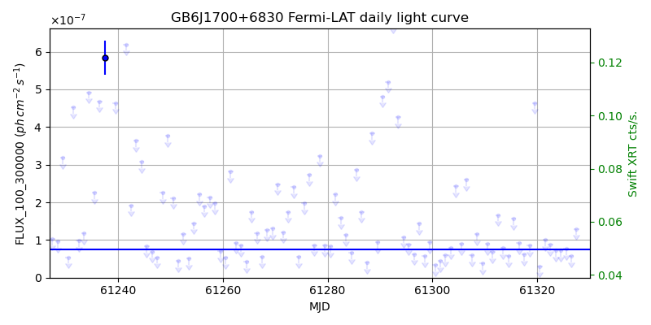
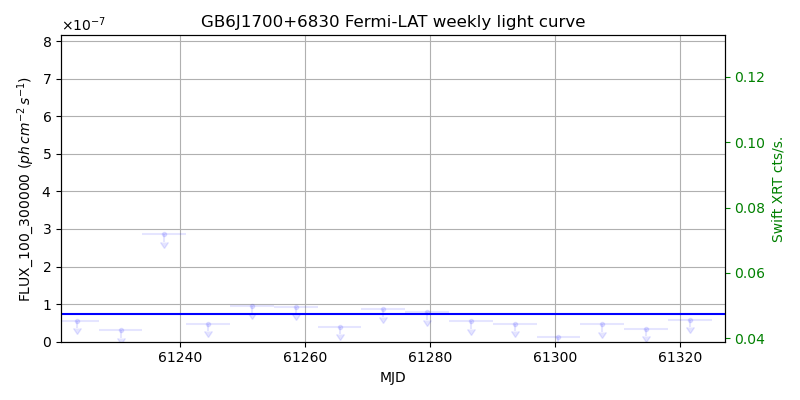
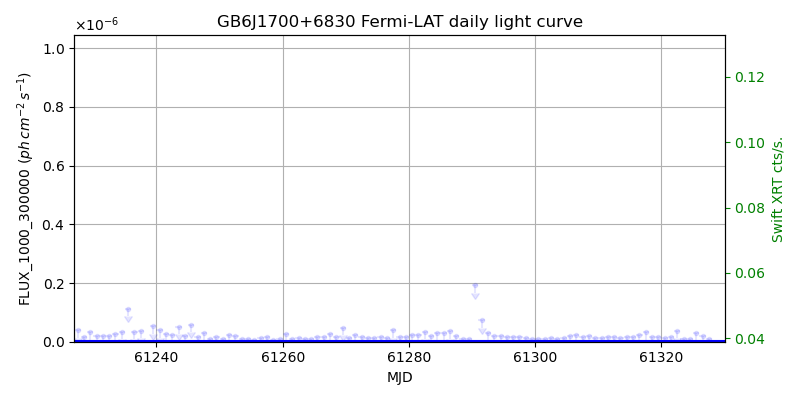
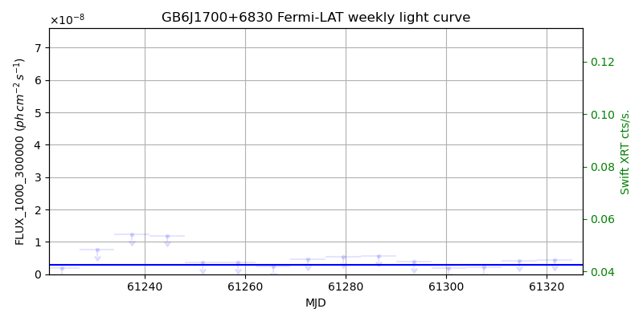

LAT Lightcurve site: https://fermi.gsfc.nasa.gov/ssc/data/access/lat/msl_lc/source/GB6_J1700p6830
Swift site: https://www.swift.psu.edu/monitoring/source.php?source=GB6J1700+6830
NED: Query
Time of last update of this page: UT: 2026-10-15 15:23 (MJD: 61328.641)
| Property | Value |
|---|---|
| R.A. | 17:00:09.36 |
| Dec. | 68:30:07.2 |
| z | 0.301 |
| 3FGL SpectrumType | PowerLaw |
| 3FGL PL Index | 2.40 |
| 3FGL Flux_100_300000 | 7.47e-08 1 / (s cm2) |
| 3FGL Flux_1000_300000 | 2.99e-09 1 / (s cm2) |
| 3FGL Flux >200 GeV | 1.81e-12 1 / (s cm2) |
| 3FGL Extrap. Crab >200 GeV | 0.01 |
| 3FGL Flux After EBL Absorption >200GeV | 6.21e-13 1 / (s cm2) |
| 3FGL EBL Crab Fraction >200GeV | 0.00 |

| MJD | dMJD | Flux | dFlux | Frac3FGL | FracCrab>200GeV | EBLFracCrab>200GeV |
|---|---|---|---|---|---|---|
| 61323.50 | 0.50 | 7.28e-08 | 0.00e+00 | 0.00 | 0.00 | 0.00 |
| 61324.50 | 0.50 | 7.29e-08 | 0.00e+00 | 0.00 | 0.00 | 0.00 |
| 61325.50 | 0.50 | 7.70e-08 | 0.00e+00 | 0.00 | 0.00 | 0.00 |
| 61326.50 | 0.50 | 5.73e-08 | 0.00e+00 | 0.00 | 0.00 | 0.00 |
| 61327.50 | 0.50 | 1.29e-07 | 0.00e+00 | 0.00 | 0.00 | 0.00 |

| MJD | dMJD | Flux | dFlux | Frac3FGL | FracCrab>200GeV | EBLFracCrab>200GeV |
|---|---|---|---|---|---|---|
| 61293.50 | 3.50 | 4.83e-08 | 0.00e+00 | 0.00 | 0.00 | 0.00 |
| 61300.50 | 3.50 | 1.13e-08 | 0.00e+00 | 0.00 | 0.00 | 0.00 |
| 61307.50 | 3.50 | 4.67e-08 | 0.00e+00 | 0.00 | 0.00 | 0.00 |
| 61314.50 | 3.50 | 3.47e-08 | 0.00e+00 | 0.00 | 0.00 | 0.00 |
| 61321.50 | 3.50 | 5.85e-08 | 0.00e+00 | 0.00 | 0.00 | 0.00 |

| MJD | dMJD | Flux | dFlux | Frac3FGL | FracCrab>200GeV | EBLFracCrab>200GeV |
|---|---|---|---|---|---|---|
| 61323.50 | 0.50 | 9.06e-09 | 0.00e+00 | 0.00 | 0.00 | 0.00 |
| 61324.50 | 0.50 | 8.77e-09 | 0.00e+00 | 0.00 | 0.00 | 0.00 |
| 61325.50 | 0.50 | 3.08e-08 | 0.00e+00 | 0.00 | 0.00 | 0.00 |
| 61326.50 | 0.50 | 1.90e-08 | 0.00e+00 | 0.00 | 0.00 | 0.00 |
| 61327.50 | 0.50 | 8.00e-09 | 0.00e+00 | 0.00 | 0.00 | 0.00 |

| MJD | dMJD | Flux | dFlux | Frac3FGL | FracCrab>200GeV | EBLFracCrab>200GeV |
|---|---|---|---|---|---|---|
| 61293.50 | 3.50 | 3.78e-09 | 0.00e+00 | 0.00 | 0.00 | 0.00 |
| 61300.50 | 3.50 | 2.00e-09 | 0.00e+00 | 0.00 | 0.00 | 0.00 |
| 61307.50 | 3.50 | 2.19e-09 | 0.00e+00 | 0.00 | 0.00 | 0.00 |
| 61314.50 | 3.50 | 4.24e-09 | 0.00e+00 | 0.00 | 0.00 | 0.00 |
| 61321.50 | 3.50 | 4.44e-09 | 0.00e+00 | 0.00 | 0.00 | 0.00 |
--------------------------------------------------------- Using user-supplied coords: 17:00:09.36 68:30:07.2 2000 --------------------------------------------------------- FLWO UT night of: 2026-10-16 Local Sid. @ Midnight: 01:15 Sunset (-15.0) (local, UT): 18:58 01:58 Sunrise (-15.0) (local, UT): 05:21 12:21 Moonrise (local, UT): Moonset (local, UT): 21:09 04:09 Moon phase: 0.28 --------------------------------------------------------- AzTime LSID UT Obj_el Obj_az Mn_el Mn_az Sep. --------------------------------------------------------- 18:58 20:13 01:58 44.2 337.6 18.8 216.5 97.3 19:28 20:43 02:28 41.6 336.1 14.9 221.9 97.2 19:58 21:13 02:58 39.0 335.1 10.6 226.7 97.2 20:28 21:43 03:28 36.3 334.5 6.0 231.2 97.2 20:58 22:13 03:58 33.5 334.5 1.3 235.3 97.1 21:28 22:43 04:28 30.8 334.8 -2.8 239.0 97.1 21:58 23:13 04:58 28.1 335.5 -9.6 242.5 97.1 22:28 23:43 05:28 25.5 336.5 -15.1 245.8 97.0 22:58 00:13 05:58 23.0 337.8 -20.8 248.9 97.0 23:28 00:43 06:28 20.6 339.3 -26.6 251.8 97.0 23:58 01:13 06:58 18.5 341.2 -32.4 254.6 97.0 00:28 01:43 07:28 16.5 343.2 -38.3 257.4 96.9 00:58 02:13 07:58 14.8 345.4 -44.3 260.2 96.9 01:28 02:44 08:28 13.3 347.8 -50.3 263.1 96.9 01:58 03:14 08:58 12.1 350.4 -56.4 266.1 96.9 02:28 03:44 09:28 11.2 353.0 -62.5 269.6 96.9 02:58 04:14 09:58 10.6 355.8 -68.5 273.8 96.9 03:28 04:44 10:28 10.3 358.5 -74.6 279.7 96.9 03:58 05:14 10:58 10.3 1.3 -80.4 290.8 96.9 04:28 05:44 11:28 10.6 4.1 -85.4 325.0 96.9 04:58 06:14 11:58 11.2 6.9 -84.8 44.3 96.9 05:21 06:37 12:21 11.8 8.9 -80.9 67.5 96.9 --------------------------------------------------------- Source never above horizon of 55.0 deg. Dark hours >55 deg.: 0.00